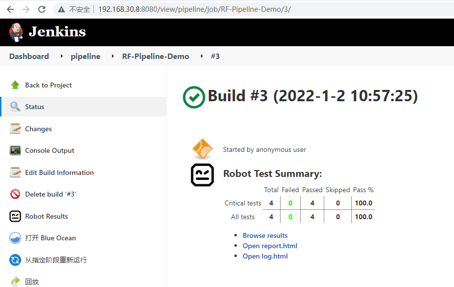
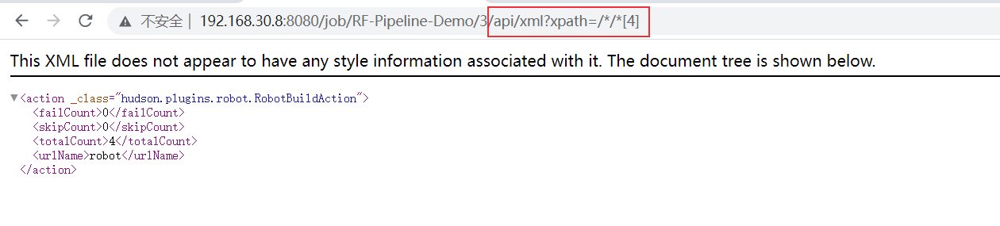
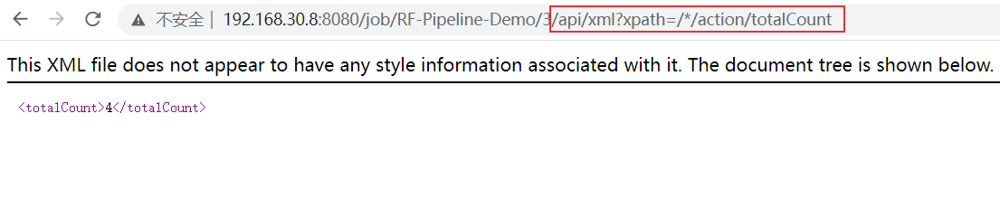
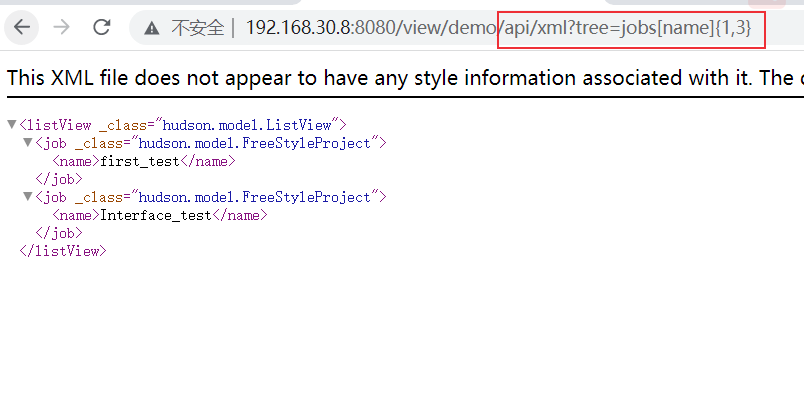
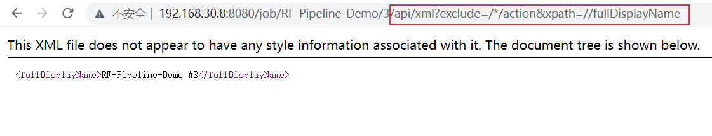
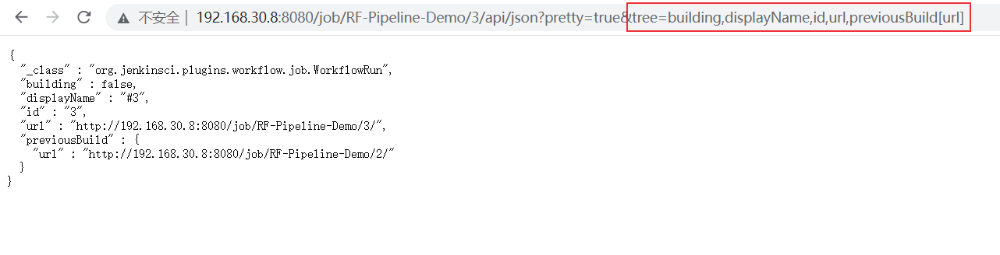
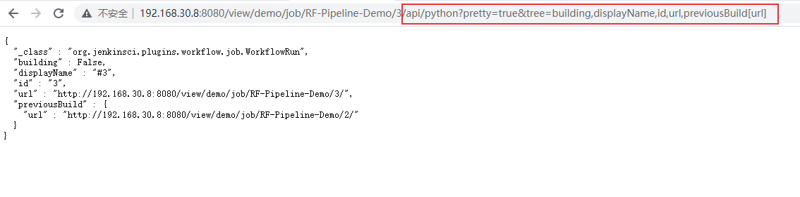

在持续集成：Jenkins API简单使用 中介绍了使用Python requests 和 jenkinsapi 库来请求Jenkins API。本文将更全面的介绍Jenkins API以及使用方法。
Jenkins API简介 我们可以使用jenkins API来获取jenkins平台相关信息、触发构建、创建/删除job等，这些API使得jenkins具备了很强的扩展性，比如集成其它平台。
Jenkins API采用的是REST架构设计风格，支持以下3种方式：
Jenkins的很多页面都提供了远程访问API，你可以在当前页面URL后添加 /api 查看当前接口说明。
除了在服务器上手动重启jenkins外，还可以通过API进行重启（POST请求）：
重启： <Jenkins-Url>/restart，立即重启
安全重启： <Jenkins-Url>/safeRestart，Jenkins会在所有正在运行的job完成后再重新启动。
获取信息 以下面这个页面为例：

在URL后面添加 api 返回如下页面：
XML API 在URL后添加/api/xml，效果如下：
下面介绍过滤xml信息的方法。
1、使用xpath语法
读取测试结果：.../api/xml?xpath=/*/*[4] 或者 /api/xml?xpath=/*/action[4]

读取用例总数totalCount：/api/xml?xpath=/*/action/totalCount 或者 /api/xml?xpath=//totalCount

还有更多的xpath语法可以使用，比如：
contains方法：xpath=//urlName[contains(text(),'robot')]
后面的邻居节点following-sibling：xpath=//failCount/following-sibling::*
更详细的xpath语法介绍可参考 Web自动化测试：xpath & CSS Selector定位 。
2、exclude语法排除节点
排除action节点：/api/xml?exclude=/*/action
3、depth指定深度
指定深度为1：/api/xml?depth=1
4、tree参数
可以使用tree参数来提取以及组合指定字段：/api/xml?pretty=true&tree=building,displayName,id,url,previousBuild[url]
如果返回多组结果，可以指定范围（索引从0开始）：
{M,N} : 从第M个元素到第N个元素{M,} : 从第M个元素到最后一个元素{,N} : 从第1个元素到第N个元素，等价于 {0,N}{N} : 第N个元素，等价于 {N,N+1}
比如下面的页面：
获取第1个到第2个元素：.../api/xml?tree=jobs[name]{1,3}

5、组合
可以使用 & 来组合多个表达式，比如：/api/xml?exclude=/*/action&xpath=//fullDisplayName

6、wrapper方法整合多个结果
过滤后可能有多个结果，需要使用wrapper方法来组合，例如：/api/xml?depth=2&xpath=//fullDisplayName&wrapper=jobname
JSON API JSON API返回json样式的数据，在URL后添加/api/json。它也支持depth参数，默认为最小深度。
来看一下效果：...3/api/json?pretty=true
JSON API也可以使用tree参数来过滤：/api/json?pretty=true&tree=building,displayName,id,url,previousBuild[url]

请求信息 由于jenkins API采用的是REST架构风格，所以支持REST API的请求方法，比如常用的POST、GET、DELETE等方法。
获取job的构建Number的API：
获取最近的job buildNumber： <Jenkins-Url>/job/<Job-Name>/lastBuild/buildNumber
最近完成构建job的buildNumber： <Jenkins-Url>/job/<Job-Name>/lastCompletedBuild/buildNumber
最近失败job的 buildNumber：<Jenkins-Url>/job/<Job-Name>/lastFailedBuild/buildNumber
最近稳定job的buildNumber：<Jenkins-Url>/job/<Job-Name>/lastStableBuild/buildNumber
最近成功job的buildNumber：<Jenkins-Url>/job/<Job-Name>/lastSuccessfulBuild/buildNumber
最近不成功（除成功以外的状态）job的buildNumber：<Jenkins-Url>/job/<Job-Name>/lastUnsuccessfulBuild/buildNumber
介绍两种方式请求api，第一种方法是curl工具，第二种是Python的requests库。
curl请求 使用如下curl命令发送GET请求：
1 $ curl -k --silent -L --user 用户名:API Token JENKINS_URL/job/JOB_NAME
API Token可以在用户配置中生成。
还是以下面这个页面为例：
1、解析xml结果
使用xpath过滤robot测试结果：/api/xml?xpath=//action[@_class='hudson.plugins.robot.RobotBuildAction']
shell脚本中，可以对返回的信息进行进一步处理，比如，读取totalCount：
1 2 3 $ curl -k --silent -L --user admin:11f8790b23a9983c0a218ba125aa855f61 http://192.168.30.8:8080/view/demo/job/RF-Pipeline-Demo/3/api/xml?xpath=//action[@_class=\'hudson.plugins.robot.RobotBuildAction\' ] | tr '<' '\n' | egrep '^totalCount>' | sed 's/.*>//g' 4 $
读取 failCount 和 totalCount：
1 2 $ curl -k --silent -L --user admin:11f8790b23a9983c0a218ba125aa855f61 http://192.168.30.8:8080/view/demo/job/RF-Pipeline-Demo/3/api/xml?xpath=//action[@_class=\'hudson.plugins.robot.RobotBuildAction\' ] | tr '<' '\n' | egrep '^totalCount>|^failCount>' | sed 's/>/:/g' | sed -e '1s/$/,/g' | tr -d '\n' failCount:0,totalCount:4
在需要读取多个值的时候，可以一个一个的请求，我的习惯是只请求一次，然后进行二次处理，比如在groovy脚本中：
1 2 3 4 5 6 7 8 9 10 11 12 13 14 15 16 17 18 19 20 21 22 def WORKFLOW_XML = sh ( script: "API_XML=\$(curl -k --silent -L --user admin:11f8790b23a9983c0a218ba125aa855f61 http://192.168.30.8:8080/view/demo/job/RF-Pipeline-Demo/3/api/xml?xpath=//action[@_class=\'hudson.plugins.robot.RobotBuildAction\'] | tr '<' '\n' | egrep '^totalCount>|^failCount>' | sed 's/>/:/g' | sed -e '1s/\$/,/g' | tr -d '\n'); echo \${API_XML}" , returnStdout: true ).trim();rf_results = WORKFLOW_XML.split("," ); if (rf_results[0 ]) { for ( res in rf_results ) { if (res.contains("failCount" )) { failCount = res.split("failCount:" )[1 ]; } if (res.contains("totalCount" )) { totalCount = res.split("totalCount:" )[1 ]; } } passCount = totalCount.toInteger() - failCount.toInteger(); passPercentage = passCount/totalCount.toInteger() * 100 ; passPercentage = Math.round(passPercentage * 100 ) / 100; / / 保留2 位小数 passRatio = passCount + " / " + totalCount; } else { passPercentage = 'null' ; passRatio = 'null' ; }
2、解析json结果
获取json格式数据和xml类似，json数据的进一步提取可以结合jq命令来使用。这里介绍一个在groovy中处理json数据的方法。
groovy脚本中可以使用readJSON 方法将json字符串反序列化为json对象，然后提取对应的值。
注意：在jenkins pipeline中使用readJSON 方法需要安装插件 Pipeline Utility Steps Plugin 。
代码如下：
1 2 3 4 def WORKFLOW_JSON = sh ( script: "API_JSON=\$(curl -k --silent -L --user admin:11f8790b23a9983c0a218ba125aa855f61 http://192.168.30.8:8080/view/demo/job/RF-Pipeline-Demo/3/api/json); echo \${API_JSON}" , returnStdout: true ).trim()def jsonObj = readJSON text: WORKFLOW_JSON; def failCount = (jsonObj.actions.failCount - null )[0 ]; def totalCount = (jsonObj.actions.totalCount - null )[0 ];
Python requests 介绍第二种请求REST API的工具Python requests库，举几个例子：
获取build number：
1 2 3 4 5 import requestsurl = "http://192.168.30.8:8080/job/RF-Pipeline-Demo/lastBuild/buildNumber" ret = requests.get(url) print(ret.text)
读取failCount：
1 2 3 4 5 6 7 8 import jsonimport requestsurl = "http://192.168.30.8:8080/view/demo/job/RF-Pipeline-Demo/3/api/json" ret = requests.get(url) res = ret.json() print(res["actions" ][3 ]["failCount" ]) print(json.dumps(ret.json(),indent=2 ))
查看当前job是否正在构建：
1 2 3 4 5 6 7 8 9 10 def checkBuilding (self,jobname ): url = "http://192.168.30.8:8080/job/{jobname}/api/json?tree=lastCompletedBuild[number],lastBuild[number]" res = requests.get(url) res = res.json() if res["lastBuild" ]["number" ] == res["lastCompletedBuild" ]["number" ]: return False else : print(f"{jobname} 正在构建中..." ) return True
触发构建 通常使用POST请求在触发构建Job，请求地址为：<jenkins url>/job/<job name>/build
无参数构建 1、curl命令
1 $ curl -k --silent -L -X POST --USER admin:11f8790b23a9983c0a218ba125aa855f61 http://192.168.30.8:8080/job/RF-Pipeline-Demo/build
2、Python requests库
1 2 3 4 5 import requestsurl = "http://192.168.30.8:8080/job/RF-Pipeline-Demo/build" username = "admin" api_token = "11f8790b23a9983c0a218ba125aa855f61" res = requests.post(url, auth=(username, api_token), verify=False )
参数化构建 对RF-Pipeline-Demo进行参数化构建配置，添加两个字符串参数param1和param2。
注意：参数化构建功能需要安装插件 Parameterized Trigger 。
1、curl命令
1 2 3 $ curl -k --silent -L -X POST --data param1=1 --data param2=2 --user admin:11f8790b23a9983c0a218ba125aa855f61 http://192.168.30.8:8080/job/RF-Pipeline-Demo/buildWithParameters $
2、Python requests库
1 2 3 4 5 6 7 import requestsjenkins_params = {'param1' : 'value11' , 'param2' : 'value22' } url = "http://192.168.30.8:8080/job/RF-Pipeline-Demo/buildWithParameters" username = "admin" api_token = "11f8790b23a9983c0a218ba125aa855f61" res = requests.post(url, auth=(username, api_token), params=jenkins_params, verify=False )
删除操作 删除操作使用POST请求：
删除Job某次构建：<Jenkins-Url>/job/<Job-Name>/<buildNumber>/doDelete，
删除Job：<Jenkins-Url>/job/<Job-Name>/doDelete，POST请求
禁用和启用Job：
禁用指定job： <Jenkins-Url>/job/<Job-Name>/disable
启用指定job： <Jenkins-Url>/job/<Job-Name>/enable
前面已经介绍了常见的Jenkins API以及使用方法，Python、Ruby和Java都对jenkins API 进行了封装，使我们使用起来更加方便。下面简单介绍Python JenkinsAPI库的使用方法。
Python API 可以在URL后添加 /api/python 获取json格式数据：/api/python?pretty=true&tree=building,displayName,id,url,previousBuild[url]

JenkinsAPI , Python-Jenkins , api4jenkins , aiojenkins 等Python库封装了许多jenkins REST API，下面以JenkinsAPI库为例。
直接来看代码：
1 2 3 4 5 6 7 8 9 10 11 12 13 14 15 16 17 18 19 20 21 22 23 24 25 26 27 28 29 30 31 32 33 34 35 36 37 38 39 40 41 42 43 44 45 46 47 48 49 50 51 52 53 54 55 56 57 58 59 60 61 62 63 64 65 66 import datetimefrom jenkinsapi.jenkins import Jenkinsclass JenkinsApiDemo : def __init__ (self, job_name, chose='jenkins' ): self.jenkins_host = '192.168.30.8' self.jenkins_port = '8080' self.username = 'admin' self.pwd = 'admin' self.jenkins_url = f"http://{self.jenkins_host} :{self.jenkins_port} " self.job_name = job_name self.jenkins_server = Jenkins(self.jenkins_url, username=self.username, password=self.pwd, useCrumb=True ) def GetJenkinsVersion (self ): print(self.jenkins_server.version) return self.jenkins_server.version def jobBuild (self ): if self.jenkins_server.has_job(self.job_name): myjob = self.jenkins_server.get_job(self.job_name) if not myjob.is_queued_or_running(): self.jenkins_server.build_job(self.job_name) def disableJob (self ): """Disable a Jenkins job""" if self.jenkins_server.has_job(self.job_name): job_instance = self.jenkins_server.get_job(self.job_name) job_instance.disable() print('Job %s Is Enabled ?:%s' % (self.job_name, job_instance.is_enabled())) def enableJob (self ): """Disable a Jenkins job""" if self.jenkins_server.has_job(self.job_name): job_instance = self.jenkins_server.get_job(self.job_name) job_instance.enable() print('Job %s Is Enabled ?:%s' % (self.job_name, job_instance.is_enabled())) def getJobInfo (self ): if self.jenkins_server.has_job(self.job_name): myjob = self.jenkins_server.get_job(self.job_name) if not myjob.is_queued_or_running(): last_buildnumber = myjob.get_last_buildnumber() print("last_buildnumber: " , last_buildnumber) last_build = myjob.get_build(last_buildnumber) start_time = last_build.get_timestamp() + datetime.timedelta(hours=8 ) print("start_time: " , start_time) print("status: " , last_build.get_status()) print("build_url: " , last_build.get_build_url()) print("duration: " , last_build.get_duration()) print("causes: " , last_build.get_causes()[0 ]["shortDescription" ]) print("change: " , last_build.get_changeset_items()) print("console_log: " , last_build.get_console()) else : print(self.job_name + " is running" ) else : print("没有 " + self.job_name + " 这个job" ) if __name__ == '__main__' : jobname = "RF-Pipeline-Demo" jk = JenkinsApiDemo(jobname) jk.GetJenkinsVersion() jk.disableJob() jk.enableJob() jk.getJobInfo()
执行结果：
1 2 3 4 5 6 7 8 9 10 11 12 2.326 last_buildnumber: 20 start_time: 2022 -01-20 18 :22 :12 +00 :00 status: SUCCESS build_url: http://192.168 .30 .8 :8080 /job/RF-Pipeline-Demo/20 / duration: 0 :00 :02.620000 causes: Started by user admin change: [] console_log: Started by user admin [Pipeline] Start of Pipeline [Pipeline] node .............
上述代码仅展示了部分方法，还可以创建、删除、复制job，创建、删除节点，重启等。
1 2 3 4 5 6 7 jenkins_server.create_job(jobname, xml) jenkins_server.copy_job(jobname, newjobname) jenkins_server.create_node(name) jenkins_server.delete_job(jobname) jenkins_server.delete_node(nodename) jenkins_server.safe_restart() jenkins_server.shutdown()
更多方法可以查看库的相关函数。
jenkins API使用示例 举一个jenkins API使用实例。
1、触发构建
1 2 3 4 5 6 7 $ curl -i -L -X POST --USER admin:1142ea7ea6919fadad76b2e0057ec01e17 http://192.168.168.228:8080/view/demo/job/PipelineDemo/build HTTP/1.1 201 Created Date: Thu, 15 Dec 2022 07:12:57 GMT X-Content-Type-Options: nosniff Location: http://192.168.168.228:8080/queue/item/449/ Content-Length: 0 Server: Jetty(9.4.45.v20220203)
通过响应数据可以知道当前构建的queue number为449。
2、查看执行状态
查看构建的队列状态
1 2 3 4 5 6 7 8 9 10 11 12 13 14 15 16 17 18 19 20 21 22 23 24 $ curl -i -L --user admin:1142ea7ea6919fadad76b2e0057ec01e17 http://192.168.168.228:8080/queue/item/449/api/json HTTP/1.1 404 Not Found X-Content-Type-Options: nosniff Cache-Control: must-revalidate,no-cache,no-store Content-Type: text/html;charset=iso-8859-1 Content-Length: 473 Server: Jetty(9.4.45.v20220203) <html> <head> <meta http-equiv="Content-Type" content="text/html;charset=ISO-8859-1" /> <title>Error 404 Not Found</title> </head> <body><h2>HTTP ERROR 404 Not Found</h2> <table> <tr><th>URI:</th><td>/queue/item/449/api/json</td></tr> <tr><th>STATUS:</th><td>404</td></tr> <tr><th>MESSAGE:</th><td>Not Found</td></tr> <tr><th>SERVLET:</th><td>Stapler</td></tr> </table> <hr/><a href="https://eclipse.org/jetty" >Powered by Jetty:// 9.4.45.v20220203</a><hr/> </body> </html>
返回404表明队列不存在了，可能是已经执行完了。
3、读取build number和构建结果
通过queue number读取对应的build number和构建结果：
1 2 $ curl -k -L --user admin:1142ea7ea6919fadad76b2e0057ec01e17 "http://192.168.168.228:8080/job/PipelineDemo/api/xml?tree=builds\[id,number,result,queueId\]&xpath=//build\[queueId=449\]" <build _class="org.jenkinsci.plugins.workflow.job.WorkflowRun" ><id>62</id><number>62</number><queueId>449</queueId><result>SUCCESS</result></build>
可以得到build number为62，result为SUCCESS。
4、读取构建日志
根据build number读取构建日志
1 2 3 4 5 6 7 8 9 10 11 12 13 14 15 16 17 18 19 20 21 22 23 24 25 26 27 28 29 30 31 32 33 34 35 36 37 38 39 40 41 $ curl -k -L --user admin:1142ea7ea6919fadad76b2e0057ec01e17 http://192.168.168.228:8080/job/PipelineDemo/62/consoleText Started by user admin Loading library pipelinelib@1.0 Opening connection to https://192.168.100.21/svn/attrobot-testcase/MX_release/pipelinelib/ Updating https://192.168.100.21/svn/attrobot-testcase/MX_release/pipelinelib/1.0@940 at revision 940 Using sole credentials admin/****** (https://192.168.100.21/svn/) in realm ‘<https://192.168.100.21:443> VisualSVN Server’ At revision 940 No changes for https://192.168.100.21/svn/attrobot-testcase/MX_release/pipelinelib/1.0 since the previous build Loading library pipelinelib2@1.0 Opening connection to https://192.168.100.21/svn/attrobot-testcase/MX_release/pipelinelib/ Updating https://192.168.100.21/svn/attrobot-testcase/MX_release/pipelinelib/1.0@940 at revision 940 Using sole credentials admin/****** (https://192.168.100.21/svn/) in realm ‘<https://192.168.100.21:443> VisualSVN Server’ At revision 940 [Pipeline] Start of Pipeline [Pipeline] node Still waiting to schedule task Waiting for next available executor on ‘win_98.178’ Running on win_98.178 in D:/jenkins/workspace/PipelineDemo [Pipeline] { [Pipeline] ws Running in D:/jenkins [Pipeline] { [Pipeline] withEnv [Pipeline] { [Pipeline] stage [Pipeline] { (initialize) [Pipeline] echo init [Pipeline] bat D:\jenkins>echo hello hello [Pipeline] script [Pipeline] { ............ [Pipeline] End of Pipeline Finished: SUCCESS
在第2步查看执行状态时，可能队列还存在：
1 2 3 4 5 6 7 8 9 10 11 12 $ curl -i -L --user admin:1142ea7ea6919fadad76b2e0057ec01e17 http://192.168.168.228:8080/queue/item/453/api/json HTTP/1.1 200 OK Date: Thu, 15 Dec 2022 07:34:44 GMT X-Content-Type-Options: nosniff X-Jenkins: 2.337 X-Jenkins-Session: 02235fb0 X-Frame-Options: deny Content-Type: application/json;charset=utf-8 Content-Length: 696 Server: Jetty(9.4.45.v20220203) {"_class" :"hudson.model.Queue$LeftItem " ,"actions" :[{"_class" :"hudson.model.CauseAction" ,"causes" :[{"_class" :"hudson.model.Cause$UserIdCause " ,"shortDescription" :"Started by user admin" ,"userId" :"admin" ,"userName" :"admin" }]}],"blocked" :false ,"buildable" :false ,"id" :453,"inQueueSince" :1671089427803,"params" :"" ,"stuck" :false ,"task" :{"_class" :"org.jenkinsci.plugins.workflow.job.WorkflowJob" ,"name" :"PipelineDemo" ,"url" :"http://192.168.168.228:8080/job/PipelineDemo/" ,"color" :"blue" },"url" :"queue/item/453/" ,"why" :null,"cancelled" :false ,"executable" :{"_class" :"org.jenkinsci.plugins.workflow.job.WorkflowRun" ,"number" :64,"url" :"http://192.168.168.228:8080/job/PipelineDemo/64/" }}
返回信息中有executable字段：
1 "executable":{"_class":"org.jenkinsci.plugins.workflow.job.WorkflowRun","number":64,"url":"http://192.168.168.228:8080/job/PipelineDemo/64/"}
通过里面的url（包含了build number）来读取构建状态：
1 2 3 4 5 6 7 8 9 10 11 12 13 14 15 16 17 18 19 20 21 22 23 24 25 26 27 28 29 30 31 32 33 34 35 36 37 38 39 40 41 42 43 44 45 46 47 48 49 50 51 52 53 54 55 56 57 58 59 60 61 C:\Users\DELL>curl -i -L --user admin:1142ea7ea6919fadad76b2e0057ec01e17 http://192.168.168.228:8080/job/PipelineDemo/64/api/json?pretty=true HTTP/1.1 200 OK Date: Thu, 15 Dec 2022 07:43:23 GMT X-Content-Type-Options: nosniff X-Jenkins: 2.337 X-Jenkins-Session: 02235fb0 X-Frame-Options: deny Content-Type: application/json;charset=utf-8 Content-Length: 1704 Server: Jetty(9.4.45.v20220203) { "_class" : "org.jenkinsci.plugins.workflow.job.WorkflowRun" , "actions" : [ { "_class" : "hudson.model.CauseAction" , "causes" : [ { "_class" : "hudson.model.Cause$UserIdCause " , "shortDescription" : "Started by user admin" , "userId" : "admin" , "userName" : "admin" } ] }, ................... { } ], "artifacts" : [ ], "building" : false , "description" : null, "displayName" : "#64" , "duration" : 88477, "estimatedDuration" : 54084, "executor" : null, "fullDisplayName" : "PipelineDemo #64" , "id" : "64" , "keepLog" : false , "number" : 64, "queueId" : 453, "result" : "SUCCESS" , "timestamp" : 1671089435140, "url" : "http://192.168.168.228:8080/job/PipelineDemo/64/" , "changeSets" : [ ], "culprits" : [ ], "nextBuild" : null, "previousBuild" : { "number" : 63, "url" : "http://192.168.168.228:8080/job/PipelineDemo/63/" } }
查看返回信息中的building字段是否为true，为true表示正在执行。为false表示执行完成，可以读取构建结果，result字段的值。
参考资料：
How to get the BUILD_USER in Jenkins when job triggered by timer? - Stack Overflow Authenticating scripted clients (jenkins.io) https://www.jenkins.io/doc/book/using/remote-access-api/ https://jenkinsapi.readthedocs.io/en/latest/api.html https://medium.com/@rathourarvi/remote-access-to-your-jenkins-using-rest-api-3d0c0bdb48a groovy保留两位小数：https://stackoverflow.com/questions/4560546/how-do-i-round-a-number-in-groovy/18354167
--THE END--
上德不德，是以有德；下德不失德，是以无德。——《道德经》